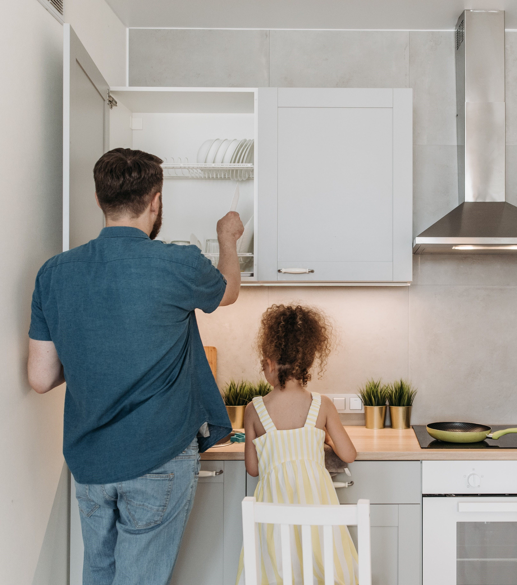

Armários, portas e tampos
Utilizar um pano limpo e macio ligeiramente umedecido com água morna
(apenas) o bastante para fazer aderir a poeira, secando logo em seguida.
Para manchas mais resistentes, use pano limpo umedecido com sabão
neutro (não alcalino) e água ou álcool (ambos em partes iguais) e seque
completamente com um pano macio. Após, lustre levemente seguindo a
textura do móvel.
Produtos como escovas, esponjas de aço e outros abrasivos não podem
ser utilizados, pois eles podem arranhar a pintura ou deixar fosca uma
parte brilhante.
Evitar:
- O contato direto de vinagre, sal e limão (substâncias
alcalinas em geral) com os móveis, pois também
podem, com o tempo, causar danos;
- O contato com materiais pontiagudos para não riscar
o móvel;
- É recomendável apenas o uso de detergentes neutros.
Pintura epóxi
Usar apenas um pano umedecido com sabão neutro.
Cromagem
Usar pano seco e limpo para remover poeira das peças. Quando necessitar de mais limpeza, utilize
apenas um pano úmido com um pouco de detergente neutro, com posterior enxágue e secagem das
peças. Não manusear os aramados com as mãos sujas de sal ou temperos. Não utilizar qualquer
tipo de esponja com camada agressiva. Aplicar cera à base de silicone a cada 30 dias, com cuidado
para não remover a camada de cromo por excesso de produto. Após, usar um pano seco para lustrar.
Vidros
Para a limpeza, utilizar água e detergente neutro diretamente em um pano apropriado ou toalha de
papel. Não aconselhamos a aplicação de produtos de limpeza diretamente no vidro, pois se trata de
um produto químico que pode vir a danificar o revestimento
Puxadores
Utilize apenas pano macio umedecido em água. Seque totalmente em seguida.
Dobradiças e corrediças
Utilize um pano macio e seco ou pincel de cerdas suaves para retirar a poeira. Lubrificar dobradiças
e corrediças com uma pequena camada de óleo, sempre tendo o cuidado de não respingar no móvel.
Em regiões litorâneas, esse procedimento deve ser mensal. Evite o acúmulo de poeira, gordura ou
umidade sobre as dobradiças e corrediças, porque podem prejudicar o seu bom funcionamento e/ou
ocasionar oxidação.
Acessórios
Utilize sabão neutro e água morna. Enxágue para não deixar resíduos e após seque-os bem,
lustrando os produtos com um pano limpo e macio.
Peças de inox e esmaltadas
As peças de aço inox deverão ser limpas com pano levemente umedecido ou com desengordurante,
desde que não tenham cloro ou seus derivados. Após, poderão ser aplicados produtos especiais
desenvolvidos para a limpeza e a conservação desses materiais
Cuidados necessários
No uso diário dos móveis, algumas situações devem ser evitadas, a fim de prolongar a vida útil do
produto.
Os raios solares não devem incidir diretamente sobre os móveis, pois podem alterar as suas
características e a cor original, devendo ser evitados, inclusive, através de vidros escuros, películas
e cortinas;
Ao manusear objetos para a limpeza, levante-os e não arraste, pois isso pode causar riscos no
revestimento dos móveis;
Não coloque peso* excessivo sobre os móveis e nunca se apoie sobre as portas, pois poderá
ocasionar seu desregulamento, deslocamento ou quebra;
Não se apoie sobre as gavetas para alcançar as partes superiores. Deve-se ter atenção com as
crianças, que, geralmente, utilizam as gavetas abertas como “escadas” para subirem nos balcões;
• Não estenda toalhas úmidas sobre a porta dos móveis, pois, ao longo do tempo, a umidade poderá
causar danos permanentes;
Não apoie panelas, formas, assadeiras e demais utensílios aquecidos sobre os balcões, pois isso
pode lhes causar danos. Sempre utilize apoios para colocar objetos quentes;
Não corte alimentos diretamente sobre os balcões, pois os instrumentos de corte poderão
danificar o acabamento dos produtos. Sempre utilize apoio para proteção;
Não utilize estiletes e outros objetos com lâminas ou pontiagudos para fazer cortes sobre os
tampos. O revestimento pode ser riscado e danificado permanentemente;
Evite o contato de tinta (canetas em geral) nos revestimentos dos armários e tampos, pois podem
causar manchas;
Sempre mantenha os móveis livres de umidade. Utilize vedantes de silicone para vedar a junção
dos tampos e das pias com o revestimento da parede. Verifique as instalações hidráulicas, a fim de
evitar vazamentos.